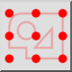

Selection Reference Points
Barra de ferramentas / Ícone:


Menu: Snap > Selection Reference Points
Atalho: S, K
Comandos: snapselectioncenter | sk
Esta é uma tradução automática.
Barra de ferramentas / Ícone:


Encaixa num dos nove pontos de referência da caixa delimitadora em torno da seleção atual: os quatro cantos, os pontos médios das quatro arestas ou o centro. É utilizado o ponto mais próximo do cursor do rato. Esta ferramenta de encaixe é útil para mover, copiar ou alinhar de outra forma uma seleção em relação à grade ou a outras entidades, por exemplo para colocar o centro ou um canto da seleção numa posição específica.